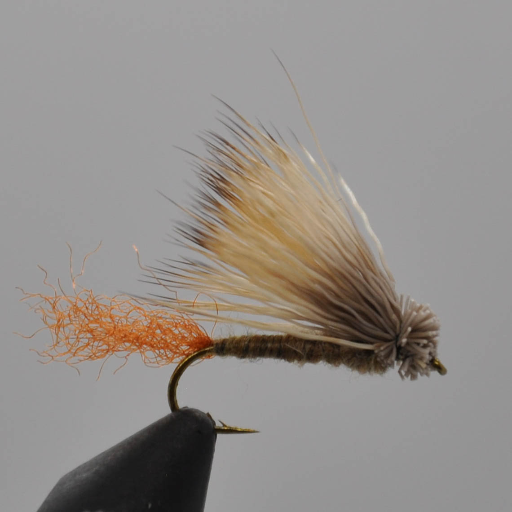

 The Caddis is a must have in any flyfisherman's box. It not only imitates a caddis but a variarity of othet bugs seen on any river around the world. The X Caddis imitates a crippled caddis that is having trouble emerging. The X Caddis works best in heavy hatches where trout are focussed on cripples. A must have crippled or emerger caddis pattern. The hot caddis is a spin off the Elk Hair Caddis but with more flash and a small orange tag end that creates color contrast and imitates an egg laying female caddis.